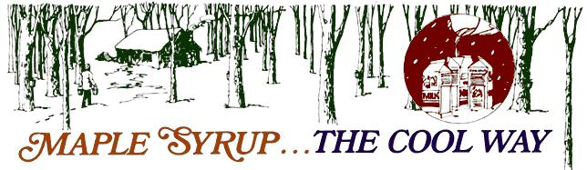
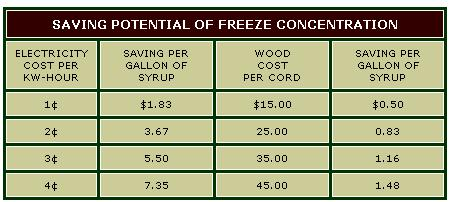

I've always thought of thick, golden maple syrup as one of the truly natural foods ... even though I never tasted the real thing until the spring of 1971.
At that time my wife and I were living, courtesy of the U.S. Army, in northern Ohio. Near our apartment was some wooded land surrounded by large signs reading "No Trespassing, U.S. Government Property". With encouragement from my partner (she promised to write me every day if I was caught) I searched this "government property"-read "public" ... that is, yours and mine-and found several large sugar and silver maple trees. Once my source of sap was assured, I was ready to launch "Project Sweet Tooth".
Since I knew almost nothing about making maple syrup, I questioned local people and read the few books I could find on the arts of gathering and processing the valuable sap. My studies were very discouraging. According to the local and literary experts, "sugaring" required mountains of expensive equipment and almost unlimited amounts of heat to boil down the juice. One story I heard concerned a woman whose gallon of kitchen-made maple syrup cost her $100: an extra $10.00 heating bill to evaporate the 40 gallons of sap and $90.00 to replace part of the ceiling that was ruined by the steam from the operation.
This was rather discouraging news, especially after I had consulted my financial advisor and found that a maximum of $1.48 could be spared from our budget for "Project Sweet Tooth". My wife also reminded me that our landlord might not take kindly to the sight of steam billowing from our kitchen. Undaunted, I prepared to tap the maples.
My sap-gathering equipment consisted of a 29 cents pack of plastic straws, 49 cents worth of quart-size plastic bags, some nails and a 1/4-inch drill. The procedure was equally simple: I bored a hole (angled slightly upward) through the bark, inserted part of a straw into the opening (it should be a tight fit) so that approximately 1/2 inch of the tube stuck out from the surface . . . and then nailed a bag underneath to catch the dripping juice. In one week-during which I made the rounds once a day-I collected five gallons of liquid from four trees. Since this was all the raw fluid I needed, I plugged the holes with wooden pegs and left the grove none the worse for my activities.
Next came the hard part ... reducing the five gallons of sap to about one pint of syrup. To do so with our electric stove, I felt, would have been too expensive. So I cast about for alternatives ... and remembered something I'd once read about the Eskimos. According to that almost-forgotten report, they sometimes obtain drinking water by cutting sea ice in the winter and storing it in the open during the summer so that only part of the frozen mass melts. The salt in the block is carried away by the thawing process and the remaining solid portion contains only fresh water. This phenomenon is called "freeze concentration".
I decided to apply Eskimo "technology" to my problem but to speed up the process by alternate freezing and partial thawing. Accordingly, I put the sap I'd gathered into empty milk cartons and placed the containers outside at night. In the morning I brought the frozen blocks into the house. After about one-third of the contents had melted, I drained off the liquid and threw the ice away. This first step reduced the volume of my raw material from five gallons to about one and a half.
I then again froze the concentrated sap . . . but this time allowed about half the ice to melt before I separated the liquid and discarded the solid remainder. The three quarts of fluid I saved from the second freeze was crystal clear and very sweet while the ice had only a faint maple flavor. Finally, I finished the project by evaporating the concentrated juice on our kitchen stove. The result was approximately one pint of sparkling, golden, delicious syrup . . . at a total cost of about 40 cents (20 cents for heat, 54 cents for straws and 15 cents for plastic bags).
To determine how much of the maple essence had been lost when I discarded the ice, I made a sugar solution of known strength and repeated the freeze concentration procedure using this "sap". I then evaporated part of the remaining liquid and part of the ice and weighed the amount of sugar in each portion. The fluid turned out to contain about ten times as much sweetening as the frozen material.
My experiment shows that if sap containing ten pounds of maple sugar is freeze concentrated, about one pound of its potential yield will be lost with the discarded ice. If you object to throwing away so much of your harvest, simply repeat the process with the solids you remove to recover another 0.9 pound of sugar.
Freezing, it seems to me, is often overlooked as a low-cost method of concentrating dilute solutions ... a pity, since the process is both easy and inexpensive. Let's stay with our example of sugaring and look at the economic advantages of this system as compared to evaporation.
Starting at room temperature, you'll need about 20 cents -25 cents worth of electricity (1,100 Btu's/pound) to evaporate one gallon of sap . . . but freezing that same quantity costs only 34-44 (185 Btu's/pound). And-since the overnight temperature at sugaring time is normally below 320 F°-even that tri fling cost can be saved. You'll still have to boil down the concentrated juice to obtain a golden color and minimize the loss of maple sugar, but the total heating bill will be tremendously reduced.
Just how much can be saved in fuel costs by the use of freeze concentration is shown in the table below. (When I prepared these figures I assumed a heating efficiency of 50%, but the actual result won't usually be that good if you burn wood outdoors in cold weather.)
To my thinking, freeze concentration will not only save on fuel but should also require less labor than conventional syrup making. For example, gathered sap could be frozen in the woods and only the concentrated liquid transported to the final evaporator.
Why not give the idea a try? Whether you make maple syrup for your own use or for sale, I'm convinced that this natural technology offers you a "cool" way to turn out a grade A product quickly and easily.
|
 |
 |
|